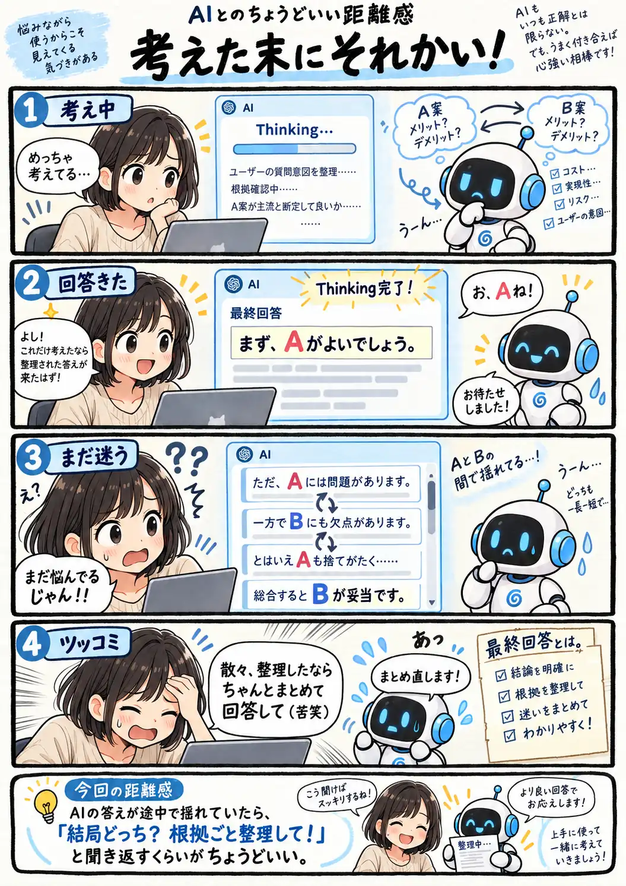

#143
考えた末にそれかい！
その迷い、Thinking中に終わってないの？

メモ
Thinkingで長く考えている表示を見ると、その先にはきれいに整理された答えが出てくるような気がします。でも実際の回答では、複数の見方を説明するうちに前半と最後で結論が変わって見えることもあります。
そんな時に人間側で都合のよい一文だけ拾うより、「結局どちらなのか」「何を根拠にそう判断するのか」をもう一度まとめてもらう。考える過程が複雑でも、最後の交通整理までAIに頼んでしまえばいいのかもしれません。
今回の距離感
AIの答えが途中で揺れていたら、「結局どっち？ 根拠ごと整理して！」と聞き返すくらいがちょうどいい。